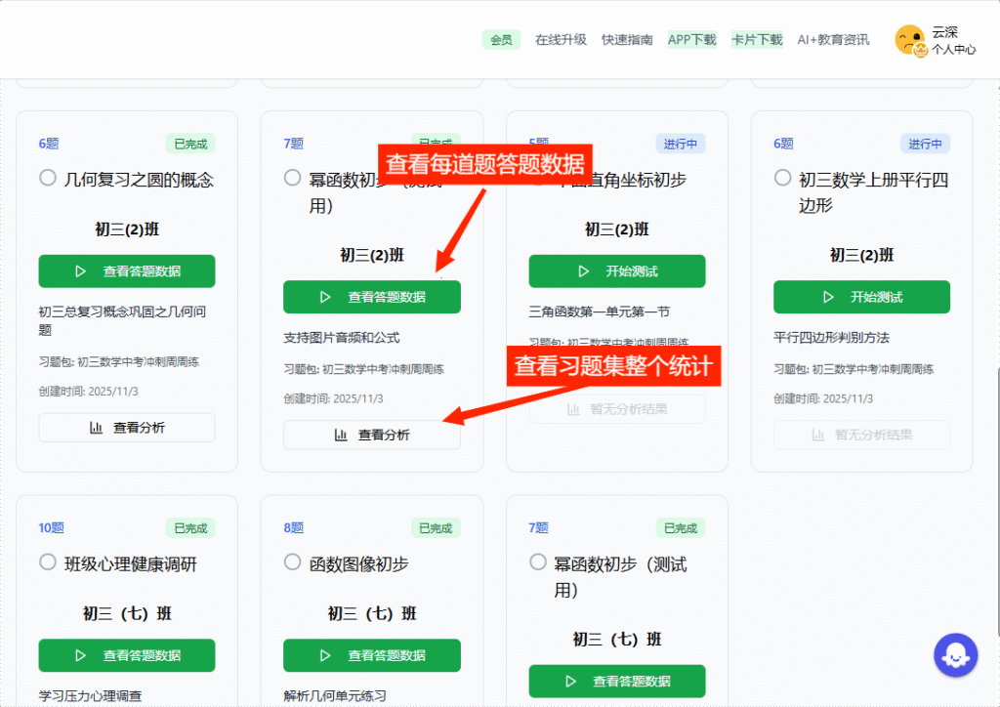
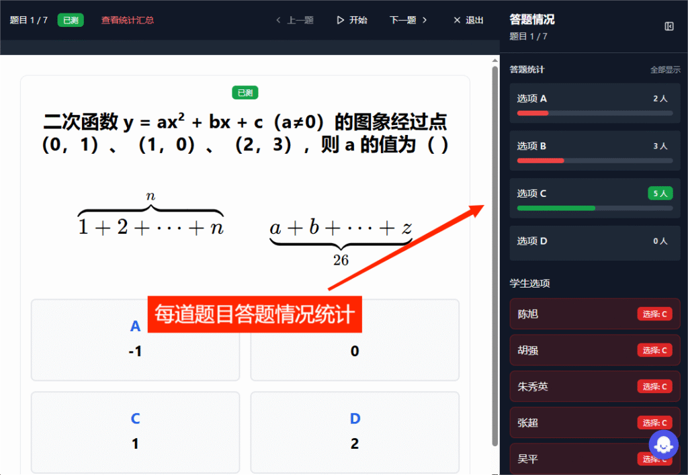
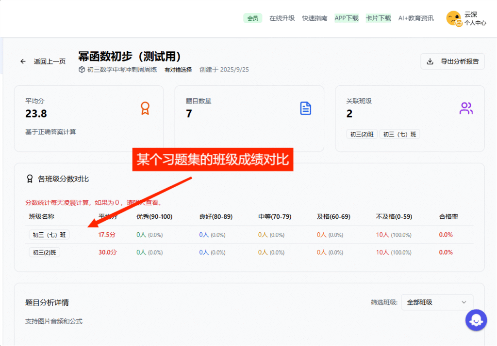
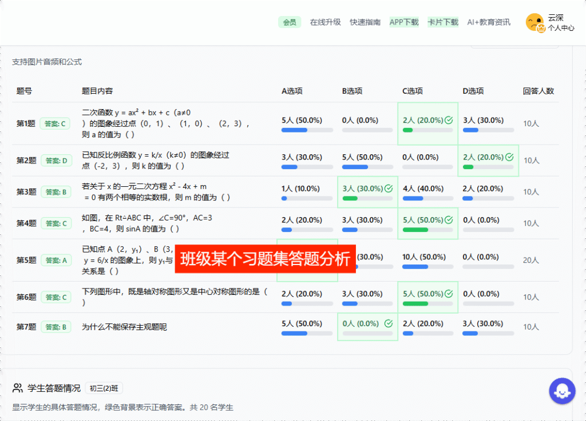
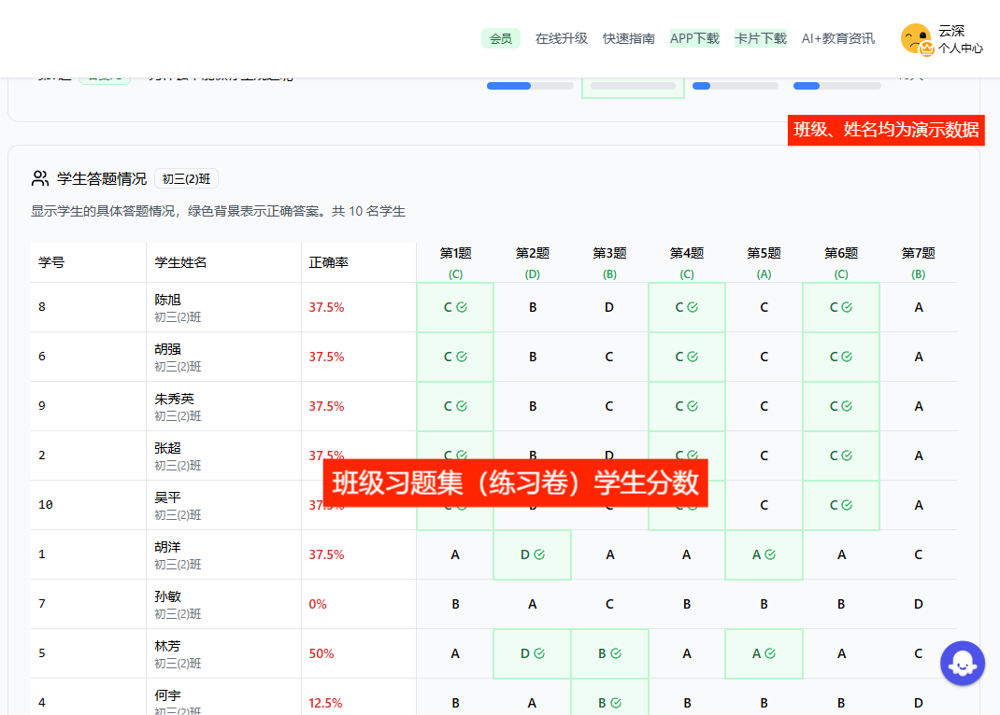
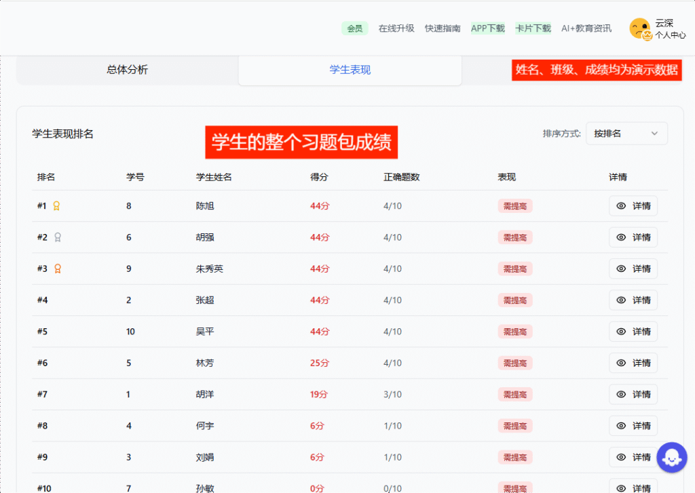
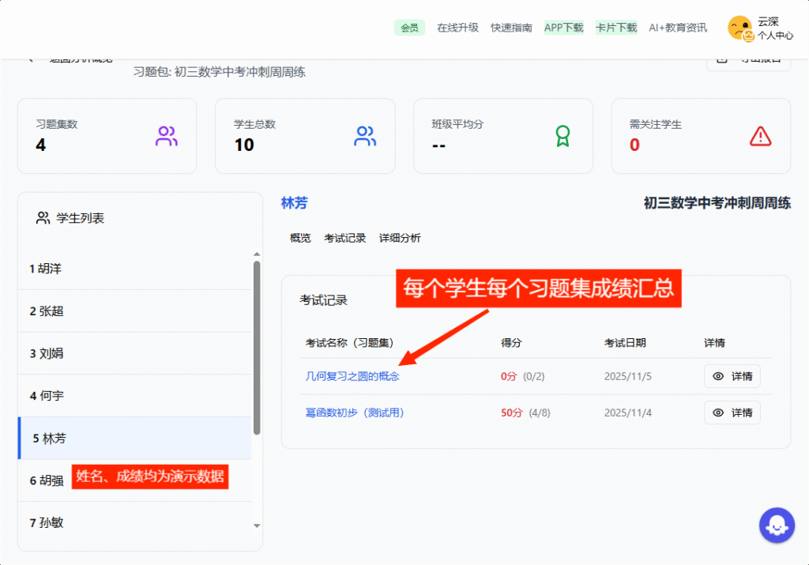
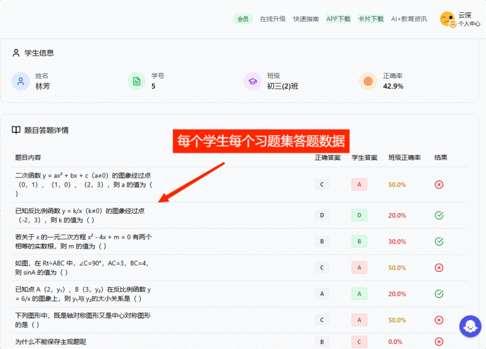

堂测课堂反馈系统也太懂老师啦！让学情数据随时获取：老师快捷扫码学生答题数据，系统后台悄悄汇总统计好，给出超全面的多维度数据呈现。
不管是学生角度、题目角度，还是卷子角度、整个学期角度，数据、汇总、分析全都覆盖！微观细到每道题的答题小细节，宏观能看到一个习题包一学期以来，不同班级的成绩大对比。详实又实用的数据，直接给老师的精准教学拉满支撑力。
下面列出课堂数据常见视角与功能示例：
- 以双视角同时查看题目细节与整体汇总。

- 点击选项可立刻查看选择该选项的学生名单。

- 图表展示成绩分布、题目难度与区分度，支持分层教学。

- 学生视图展示某学生在习题包中的历次成绩轨迹，便于跟踪进步。

- 答题汇总可按班级合并或导出用于年级对比分析。

- 习题包的历次分数趋势帮助判断教学环节是否稳定。

- 组合视图把习题包和学生维度串联，形成学生的知识画像。
- 对比视图并列个体成绩与班级正确率，便于识别需重点辅导的学生。

- 综合工具能快速定位错误原因，指导课堂讲解与课后辅导。

当然，数据越积累越有价值，堂测让老师们轻松拿捏学情，教学更省心。